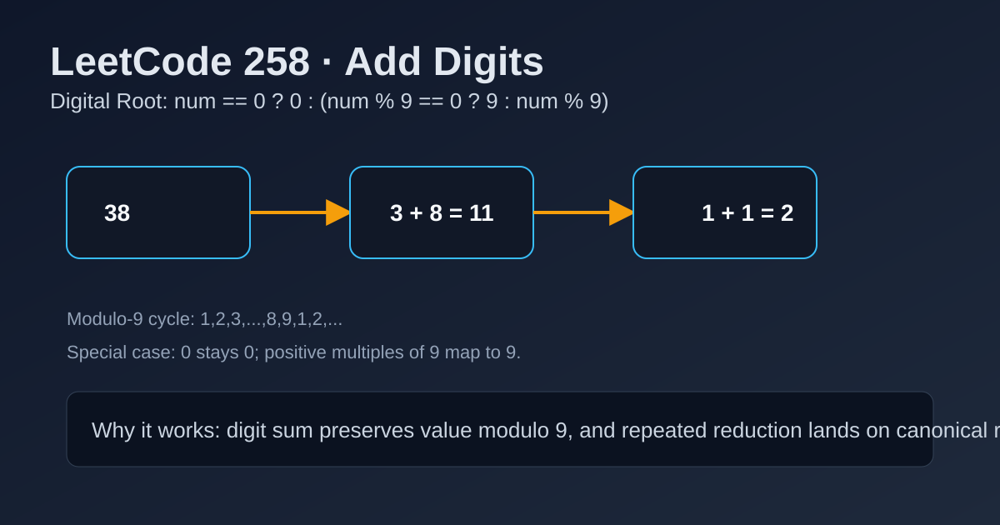

LeetCode 258: Add Digits (Digital Root Math Derivation)
LeetCode 258MathNumber TheoryInterviewToday we solve LeetCode 258 - Add Digits.
Source: https://leetcode.com/problems/add-digits/

English
Problem Summary
Given a non-negative integer num, repeatedly add its digits until only one digit remains, then return that single digit.
Key Insight
The repeated digit-sum is exactly the digital root. In base 10, digital root follows modulo 9 behavior: non-zero multiples of 9 map to 9, others map to num % 9.
Brute Force and Limitations
Simulation is straightforward: loop through digits, sum, and repeat while result has at least two digits. It works, but not O(1) and unnecessary once the modulo pattern is known.
Optimal Algorithm Steps
1) If num == 0, return 0.
2) Compute r = num % 9.
3) If r == 0, return 9; otherwise return r.
Complexity Analysis
Time: O(1).
Space: O(1).
Common Pitfalls
- Returning 0 for all num % 9 == 0 values (wrong for 9, 18, ...).
- Forgetting the special case num == 0.
- Mixing simulation and formula inconsistently in edge cases.
Reference Implementations (Java / Go / C++ / Python / JavaScript)
class Solution {
public int addDigits(int num) {
if (num == 0) return 0;
int r = num % 9;
return r == 0 ? 9 : r;
}
}func addDigits(num int) int {
if num == 0 {
return 0
}
r := num % 9
if r == 0 {
return 9
}
return r
}class Solution {
public:
int addDigits(int num) {
if (num == 0) return 0;
int r = num % 9;
return r == 0 ? 9 : r;
}
};class Solution:
def addDigits(self, num: int) -> int:
if num == 0:
return 0
r = num % 9
return 9 if r == 0 else rvar addDigits = function(num) {
if (num === 0) return 0;
const r = num % 9;
return r === 0 ? 9 : r;
};中文
题目概述
给定一个非负整数 num，不断把各位数字相加，直到结果只剩下一位数字，返回这一位数。
核心思路
这个过程本质是求数字根（digital root）。十进制下数字根与模 9 有固定关系：除了 0 以外，9 的倍数结果是 9，其余为 num % 9。
暴力解法与不足
可以循环模拟“拆位求和再继续”，实现不难，但并非 O(1)。既然有数学规律，就没必要每次都重复计算。
最优算法步骤
1）若 num == 0，直接返回 0。
2）计算 r = num % 9。
3）若 r == 0 返回 9，否则返回 r。
复杂度分析
时间复杂度：O(1)。
空间复杂度：O(1)。
常见陷阱
- 把所有 num % 9 == 0 都返回 0（9、18 等应返回 9）。
- 忽略 num == 0 的特判。
- 模拟法与公式法混用时边界处理不一致。
多语言参考实现（Java / Go / C++ / Python / JavaScript）
class Solution {
public int addDigits(int num) {
if (num == 0) return 0;
int r = num % 9;
return r == 0 ? 9 : r;
}
}func addDigits(num int) int {
if num == 0 {
return 0
}
r := num % 9
if r == 0 {
return 9
}
return r
}class Solution {
public:
int addDigits(int num) {
if (num == 0) return 0;
int r = num % 9;
return r == 0 ? 9 : r;
}
};class Solution:
def addDigits(self, num: int) -> int:
if num == 0:
return 0
r = num % 9
return 9 if r == 0 else rvar addDigits = function(num) {
if (num === 0) return 0;
const r = num % 9;
return r === 0 ? 9 : r;
};
Comments